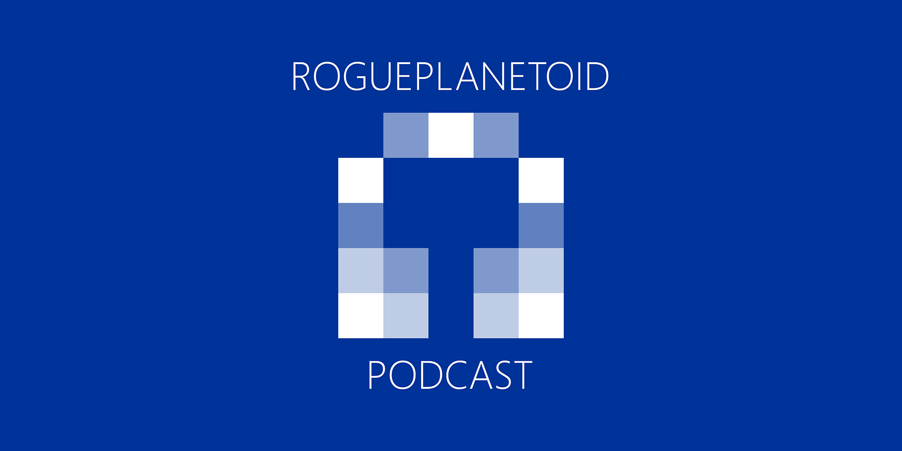

RoguePlanetoid Weekly Update #57
19th May 2024

This week saw events such as Thinking Digital and The Late Shows,
however I didn't make it to either event this year, but was great to see updates on social media from both events and hopefully will be able to make them next time!
The reason I couldn't go to those events has been all the preparation and getting ready for next week for The Podcast Show!
Next week I will be down in London for The Podcast Show!
This will be an event like nothing I've ever been to before, it has taken weeks of preparation and a lot of work this week to get ready,
but it will be worth all the time and effort! It will also be great to see my wife doing her first ever session at an event,
Beyond the Headlines: Ethical Diving into True Crime Podcast Investigations am very proud and can't wait to see that!
RoguePlanetoid Weekly Update #56
12th May 2024
This week saw the release of Windows Presentation Foundation with .NET which is a
Talk on tutorialr.com which talks about Windows Presentation Foundation,
and modern .NET along with an example showing off Windows Presentation Foundation taking advantage of the modern .NET
ecosystem in a conventional way with Blazor Hybrid or unconventional ways such as ASP.NET Core Web API and an ASP.NET Core Web App
being served from a Windows Presentation Foundation application and even part of Windows Presentation Foundation being served in an
ASP.NET Core Web App. There was also an Article about Windows Presentation Foundation
with more general information about WPF. This second Talk on Windows Presentation Foundation with .NET
has already gained over twenty views with the previous Talk on Rules Engine with .NET
remaining popular with over six hundred downloads! You can check out both Talks along with Episodes of the
RoguePlanetoid Podcast on YouTube!
This week saw an amazing event witnessed in many places all over the world which was the Aurora Borealis and Aurora Australis reaching places far south or north of
where they would usually be visible! I've always wanted to travel to see the Northern Lights, having never seen them before, but never imagined by first time ever
seeing them would be right on my doorstep here in Gateshead! Not often you get to tick off a lifetime goal by just going outside, and that was the case for many people around the world
who also witnessed it for the very first time wherever they live! I also took some amazing night-mode shots of the Aurora over Gateshead on my Samsung Galaxy S22 Ultra!
Next week is Thinking Digital although this year I'm not able to make it due to preparations for another event
in London, The Podcast Show so will have to catch as much of the life stream as I can, but hopefully
I'll be able to attend again in person next year! It will be a busy week next week with getting ready for the event in London, but I'm looking forward to going down there
nd writing about my experiences there here on this website!
tutorialr.com Talk Thursday - Windows Presentation Foundation with .NET
9th May 2024

It is another Tutorial Thursday and tutorialr.com has been updated
with a new Talk about Windows Presentation Foundation with .NET that you can watch!
Windows Presentation Foundation with .NET will talk about .NET and Windows Presentation Foundation
along with Blazor, ASP.NET Core Web App, ASP.NET Core Web API applications.
Then will cover what is Windows Presentation Foundation, XAML and then showing a Demo
which should hopefully help with understanding Windows Presentation Foundation with .NET!
You see the Talk on YouTube or get the Slides and Demo on
GitHub along with an Article on
tutorialr.com.
RoguePlanetoid Weekly Update #55
5th May 2024
This week I presented at my very first hybrid event for .NET Notts for those in person in Nottingham along with those joining online! If you missed
the presentations, then you can check them out now on YouTube.
It was a great experience travelling down to Nottingham for the very first time, there were some minor delays on the way but had factored those into
my journey so if I'd missed a train, I'd be okay! I'm pleased to say I caught every train I was supposed to and even saved a bit of time at the end
with the Trams in Nottingham saving me time getting from and to the station! I'm looking forward to doing another talk somewhere else in the UK in
the future and was great to do my talk Take a Note of XAML with .NET 8 again and got some great feedback afterwards!
This week also saw the release of sixteenth Episode of the RoguePlanetoid Podcast about Uno Platform,
it was great to talk about Uno Platform again, I've covered it before two years ago and four years ago but hope to do more with it later this year!
It has been great to see how much Uno Platform has evolved over the years since I first became aware of it, from when Universal Windows Platform
was the technology to target Windows to it using WinUI 3 just like Windows App SDK. Uno Platform is an open-source platform for building
native mobile, web, desktop and embedded apps in a single codebase using C# and XAML.
Next week will see the release of another tutorialr.com Talk on Windows Presentation Foundation with .NET,
which will be released this Thursday! It was great to do a second Talk after the first, Rules Engine with .NET,
gained over 560 views on YouTube, already becoming one of the most popular videos I've ever done! I'm planning on doing more Talks later this year but is good to have completed
this second one on Windows Presentation Foundation with .NET.
RoguePlanetoid Podcast - Episode Sixteen - Uno Platform
1st May 2024

Today sees the release of Episode Sixteen of the RoguePlanetoid Podcast
about Uno Platform, Uno Platform is an open-source platform for building
native mobile, web, desktop and embedded apps in a single codebase using C# and XAML.
You will find the Podcast where you listen to your podcasts such as Spotify,
Amazon Music, RadioPublic, Apple Podcasts, Pandora,
YouTube Music along with YouTube where you can catch up with previous episodes
and Subscribe or Follow so you don't miss any future Episodes.